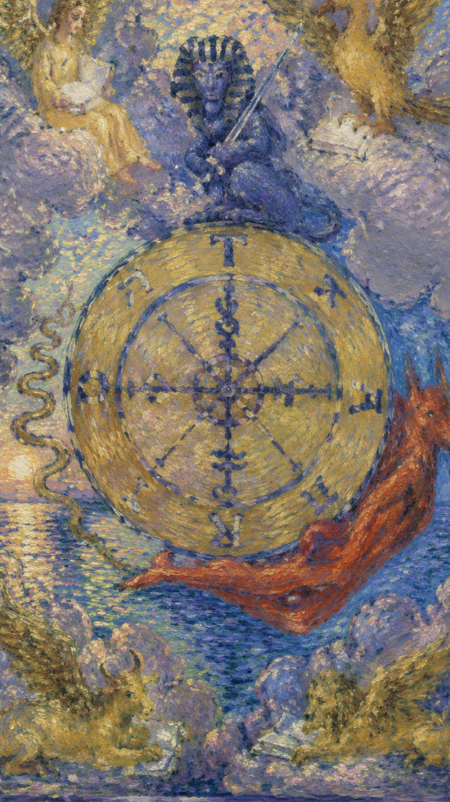
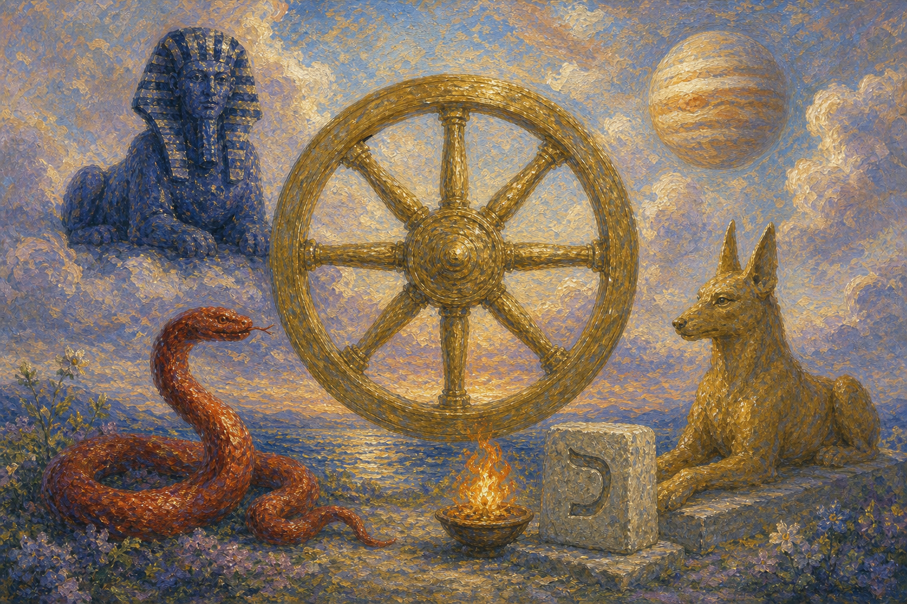
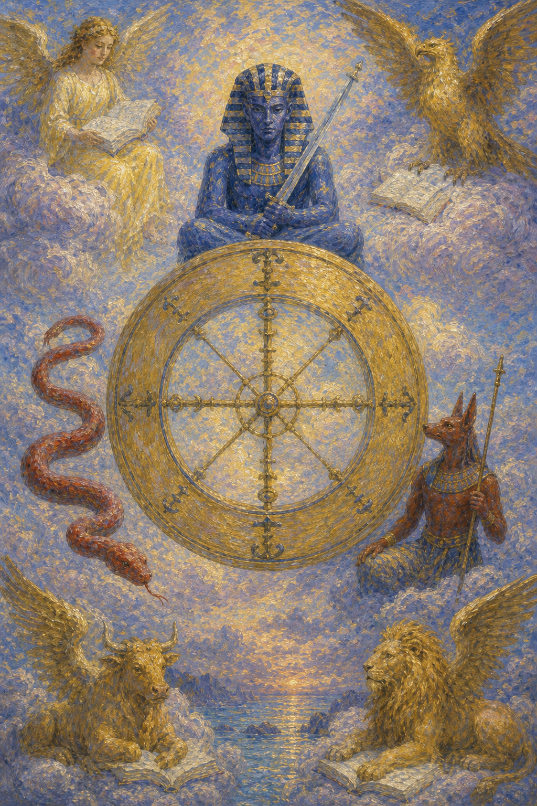
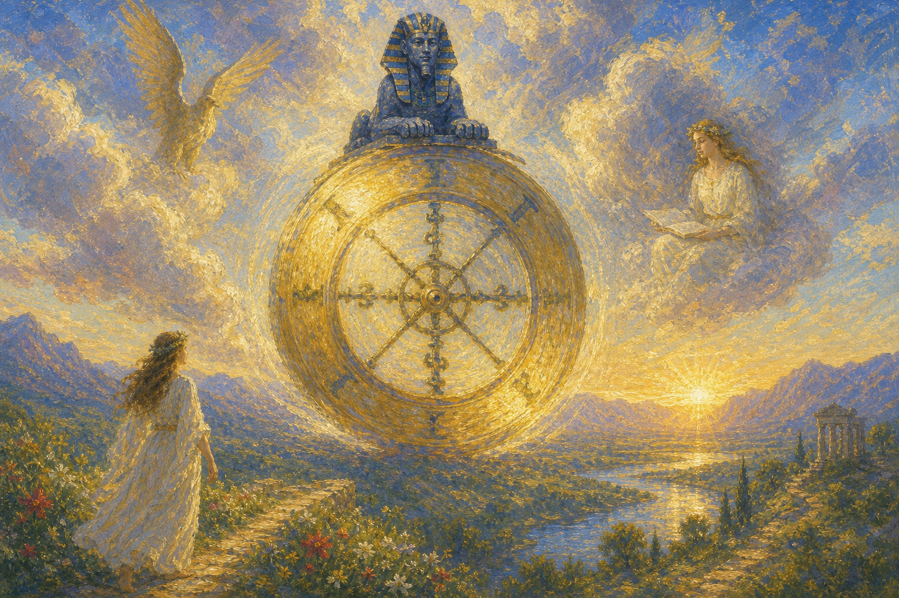
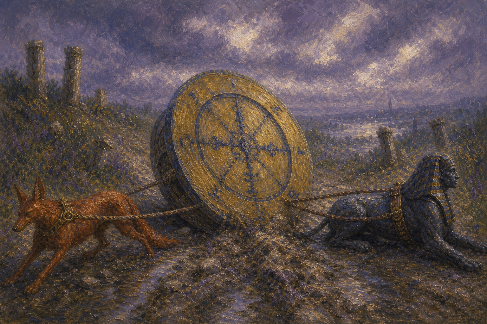
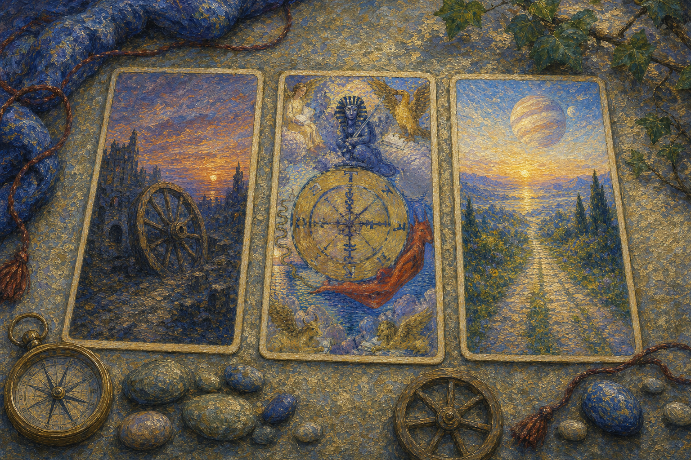

命运之轮缓缓转动，把人带过高处与低谷。它显示生命的周期，也显示时机在无声中更替。 当这张牌出现，说明你正遇到“循环、转机、命运、变化”的课题。它既可能表现为外部事件，也可能是内心正在成熟的一个阶段。命运之轮是大牌中少数几张没有人物的牌，牌面却丰富而寓意深刻：天空中悬着一架蔚蓝的命运之轮，与教皇的三层投管相似，它也由三层组成。最内层的圆空无一物，象征万物的创造；中间一层有四个炼金符号，代表西方物质的四要素，象征万物的形成；最外层是物质世界之圈，上、右、下、左四方分别是 T、A、R、O 四个字母，可拼读为 ROTA（轮）、ORAT（说）、TORA（律法）、ATOR（哈托尔女神），组成一句完整的话——“塔罗之轮诉说哈托尔女神的律法”。物质世界圈中另四个方位则是上帝最古老的名字 YHVH。
← 返回大厅 / 选择其它卡牌轮子周围有四圣兽、斯芬克斯与升降的神秘生物，象征宇宙循环。轮盘左侧是埃及神话中的邪恶之神，蛇头朝下预示人生的沉沦；背负命运之轮的阿努比斯预示着背负命运的渴望；顶端的狮身人面像是智慧的象征，其手中的宝剑代表思考——面对人生，思考真谛或许正是获取顺境的方法。牌的四角分别是狮子、飞鹰、天使与神牛，对应四个固定星座与四元素：鹰为天蝎座属水、狮为狮子座属火、牛为金牛座属土、人为水瓶座属风。它们都在读书、汲取智慧，而翅膀赋予它们在变动中保持稳定的能力。
正因这张牌上没有人物，它说到底与个人无关——无论当事人此刻经历高潮还是低谷，主因都不在当事人本身，因此既无需洋洋自得，也不必自我否定，却也无法靠主动行动改变当下。命运之轮展现的是塔罗中少有的“不可抗力”：相信因果者可视之为业报的显现，不信者可视之为上帝掷骰子恰好掷到某个数字。由于它表现的是不可抗拒的天道轮回与自然节律，其影响极为长久。
人事物不以个人意志为转移，既充满偶然性，又拥有必然性。轮子转到何处并非当事人所能左右，因此真正的智慧在于顺势识时、坦然接纳起落，而非执着于“我能否掌控结果”。
轮子周围有四圣兽、斯芬克斯与升降的神秘生物，象征宇宙循环。


轮子周围有四圣兽、斯芬克斯与升降的神秘生物，象征宇宙循环。
表现当事人面对课题时的心理位置。
提示事件发生的精神气候与现实压力。
象征这张牌运作能量的工具或门槛。
显示意识清晰度、希望或阴影。
对应此阶段在人生旅程中的功课。
象征生命的周期性、命运与机遇的变化。
中心的图像代表权力与知识的结合。
四角的四个生物分别代表四福音书的作者，象征智慧、力量、美与速度。
旋转中的文字可读作“TORA”，意味着占星术或犹太人的律法。
与圣马可相应，象征勇气与力量。
象征耐心与牺牲。
代表圣马太，象征智力与知识。
代表圣约翰，象征高飞与灵视。
转轮边缘的符号象征炼金术与元素转化的过程。
转轮中心的同心圆象征目标与精神的集中。
四角的云象征超自然的力量与神秘。
可能代表赛特，古埃及的混沌与风暴之神。
可能象征智慧与知识。
金色象征高贵、繁荣与直觉的灵光。
数字 10 象征一个循环的完成，也孕育下一轮开始。它把 1 的开端与 0 的无限相连，提示命运正在换档。
命运之轮的课题在于识时。好运与阻滞都只是轮上的一刻，清醒的人会在变化中调整姿态。

**关键词**：转机，好运，变化，机遇，周期，顺势而为，把控时机，机会降临，转变期，意外的收获，当机立断，幸运降临，恢复原状，因果报应，善恶有报，生命周期，命运，天理，天命，转折点，运势上升
正位的命运之轮表示转机临近。好运来临，事情有所改变，命运正迎来转折——你可能交上好运、走向成功、得到喜讯，事情逐渐好转、机会随之而来，命运的轮盘开始转动，幸运之神正眷顾着你。机会可能来自外部环境、偶然相遇、政策变化或一段旧循环的自然结束。
转机，好运，变化，机遇，周期，顺势而为，把控时机，机会降临，转变期，意外的收获，当机立断，幸运降临，恢复原状，因果报应，善恶有报，生命周期，命运，天理，天命，转折点，运势上升
火 元素 · 开启、滋养与自我调和
健康生活上，命运之轮提示身心状态与当前心理课题相连。适合检查压力来源、作息习惯和身体信号，并以更稳定的方式照顾自己。身体也有自己的周期与节律，顺应它的起落、在状态好时积蓄、在低谷时休养，会比强行对抗更有益。
可能代表摄影、绘画等受爱好影响较大的事物，也意味着获得机会、立即行动。若问具体事件，正位多表示事情进入关键阶段。主动理解它的意义，会比单纯等待结果更有力量。

**关键词**：停滞，坏运，抗拒变化，反复，失控感，时机不佳，判定错误，情绪低落，运气不佳，左右为难，一时的幸福，倒霉，霉运，拒绝改变，循环终止，循环断裂，运势下降，不顺，挫折，困难，不利的变化
逆位的命运之轮表示这股能量受阻、失衡或被错误使用：运气不佳，事情可能发生逆转，遭遇命运的挫折，发展不顺、失去机会，命运的轮盘仿佛停止转动。此时最重要的是先看清自己是否正在抗拒这张牌所要求的功课。
停滞，坏运，抗拒变化，反复，失控感，时机不佳，判定错误，情绪低落，运气不佳，左右为难，一时的幸福，倒霉，霉运，拒绝改变，循环终止，循环断裂，运势下降，不顺，挫折，困难，不利的变化
火 元素 · 延迟、失控与过度自我沉溺
健康上，逆位常提示压力累积、情绪压抑、作息失衡或身体警讯被忽略。当人抗拒变化、被失控感裹挟，情绪低落与节律紊乱便容易显现。建议减少极端做法，接纳无法掌控之事，重新建立可持续的生活节奏。
可能代表暂时的好运、爽约，对事物感到乏味，或生活单一无趣。事情可能延迟、反复或暴露隐藏问题。先修正模式，再谈结果。

当命运之轮出现在三牌阵中，它象征的是能量在时间维度上的显现。点击下方卡牌揭示隐秘启示。
过去的行动与决定开始显现其结果，无论好坏，都是生活循环与变化的一部分。
正是转折点，命运之轮正为你展开新的篇章，你可能感到事业或个人生活的动态变化。
未来将有更多机遇与挑战，重要的是保持开放与适应性，以充分利用即将到来的新局面。